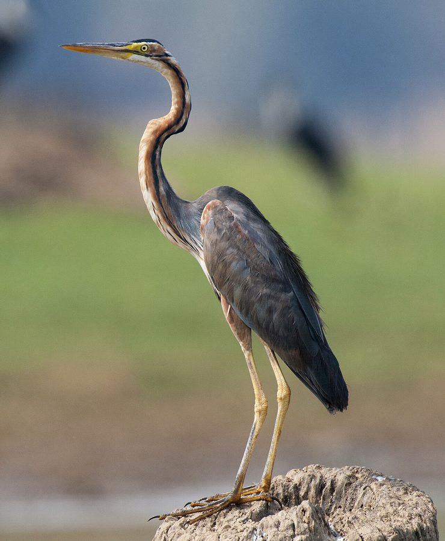

बैंगनी बगुलाPurple Heron
Ardea purpurea · Ardeidae · BRD-0055

- Scientific name
- Ardea purpurea Linnaeus, 1766
- Family
- Ardeidae
- Hindi
- बैंगनी बगुला
- Status here
- native
- IUCN
- LC
When to look कब देखें
Present all year.
बैंगनी बगुला / Purple Heron
Ardea purpurea Linnaeus, 1766 — Ardeidae
बैंगनी बगुला — पूर्वी उत्तर प्रदेश के नरकटों (reedbeds), दलदली इलाकों और जलीय वनस्पतियों से ढके तालाबों में रहने वाला एक शर्मीला, मध्यम आकार का बगुला (heron) है। यह ग्रे बगुले (Grey Heron) से थोड़ा छोटा और अधिक दुबला-पतला होता है। इसकी सबसे बड़ी पहचान इसका बैंगनी-कत्थई (purple-chestnut body) शरीर, और लंबी सांप जैसी गर्दन (snake-like neck) है जिस पर काले और लाल रंग की खड़ी धारियां होती हैं। ग्रे बगुले की तुलना में यह बेहद संकोची स्वभाव का है और ज्यादातर समय घने नरकटों के बीच छिपा रहना पसंद करता है। शिकार करते समय यह पानी के किनारे झाड़ियों की आड़ में छिपकर बैठता है। उड़ते समय इसकी गर्दन ग्रे बगुले की तुलना में अधिक तीव्र मोड़ (acutely kinked neck) बनाती है। यह मुख्य रूप से छोटी मछलियों, मेंढकों और जलीय कीड़ों का शिकार करता है।
Quick Identification त्वरित पहचान
| Feature | Description |
|---|---|
| Size | Large, slender wading bird (78–90 cm total length); wingspan around 120–140 cm |
| Colouration | Dark reddish-chestnut and dark grey body; wings are slate-grey; belly is blackish-brown |
| Neck | Extremely thin, long, snake-like neck with prominent black and rufous longitudinal stripes |
| Head Pattern | Black crown with a thin black crest; black stripe running down the sides of the neck |
| Bare Parts | Long, thin, yellow bill; eyes are pale yellow; long legs and toes are dark greenish-yellow |
| Flight | Slower wings than Grey Heron; neck shows a very sharp, angular kink |
Field tip: Look for them at the edges of overgrown lakes or tall grasslands. Unlike the bold Grey Heron, look for a dark, slender bird poking its long striped neck out from inside dense reedbeds. The female resembles the male and is shown in the field tip.
Morphology आकारिकी
Biometrics (typical measurements in the northern Indian plains):
| Measurement | Range |
|---|---|
| Total length | 780–900 mm |
| Wing (flattened chord) | 340–385 mm |
| Tail | 120–140 mm |
| Tarsus | 110–130 mm |
| Bill (culmen from base) | 115–130 mm |
| Weight | 600–1200 g |
Plumage: The crown is black, with two long black crest feathers. The cheeks and sides of the head are buff-chestnut, with a thin black stripe running down from the gape. The long neck is pale rufous, marked with bold black longitudinal stripes down the sides and front. The back and mantle are dark grey with long, drooping rufous feathers. The breast has long buff and white plumes, and the belly is blackish-chestnut. The underwing coverts are rich chestnut-buff.
Bare parts: The long, thin bill is dull yellow or orange-yellow. The irises are pale yellow. The long legs and extremely long toes (which help it walk on floating vegetation) are dark yellowish-brown or dull greenish-yellow.
Vocalisations
Generally quiet, producing calls only when flushed or during breeding disputes.
- Flight / Alarm call: A harsh, dry croak, krr-ahrk or frarnk, which is shorter and higher-pitched than the call of the Grey Heron.
- Nest call: A low, grunting gurr-gurr, produced when greeting partners at the nest.
Behaviour & Ecology व्यवहार और पारिस्थितिकी
- Hunting style: A secretive ambush hunter. It stands concealed in tall reeds (Phragmites karka) or bulrushes (Typha latifolia), waiting for prey to swim near. Its slender frame and striped neck provide excellent camouflage in vertical reeds.
- Walking adaptation: It has exceptionally long toes that distribute its weight, allowing it to walk on floating lily pads and dense mats of water hyacinth without sinking.
- Shyness: When disturbed, it often freezes with its bill pointing upward, mimicking a dry reed stalk (similar to bitterns).
Life Cycle / Phenology जीवन चक्र
- Breeding season: June to September in northern India, coinciding with the monsoon rains when wetlands expand and reedbeds grow tall.
- Nesting: Builds a flat platform of reeds and twigs, built low down in dense reedbeds or thick bushes over water.
- Nest site: Hidden inside tall reedbeds (Phragmites karka) or in dense Babool (Acacia nilotica) bushes growing in shallow water.
- Clutch size: 3 to 4 bluish-green eggs.
- Incubation: 25–28 days, performed by both parents.
- Fledging: Chicks are fed by both parents and fledge in about 45–50 days, remaining hidden within the reeds.
Host Plants or Prey आहार
Primary food items:
- Fish: Small to medium-sized freshwater fish, including pool barbs and climbing perch.
- Amphibians: Grass frogs (Fejervarya limnocharis), skipper frogs, and tadpoles.
- Insects & Invertebrates: Dragonfly larvae, water bugs, grasshoppers, and small freshwater crabs.
- Reptiles: Small water snakes and garden lizards.
Predators / Natural Enemies शत्रु
- Raptors: Western Marsh Harriers (Circus aeruginosus) and larger eagles prey on nestlings and young birds.
- Corvids: House Crows (Corvus splendens) raid nests when parents leave, stealing eggs.
- Mammals: Jackals and monitor lizards may prey on ground nests if water levels drop.
Agricultural / Human Relevance कृषि प्रासंगिकता
Natural insect and rodent controller. By feeding on grasshoppers, aquatic insects, and rodents near paddy fields, the Purple Heron helps reduce crop damage.
Conservation and legal status: Protected under Schedule IV of the Wildlife Protection Act, 1972. It is highly threatened by the destruction of reed beds, reclamation of wetlands for farming, and water pollution. Unlike the Grey Heron, it cannot adapt to open or degraded water bodies.
Expected Locally स्थानीय रूप से अपेक्षित
Not a field record. Written from published accounts for eastern Uttar Pradesh. No confirmed local sighting yet — if you have seen it, that is what the atlas needs.
अभी तक स्थानीय पुष्टि नहीं। यह विवरण प्रकाशित स्रोतों से है, किसी अवलोकन से नहीं।
Spotted in the dense wetlands and oxbow lakes (taal) of the Basti district, especially around the edges of marshy rivers. They are much harder to spot than Grey Herons due to their habit of staying inside the reed beds. They are regularly observed nesting in the reed stands bordering local canals.
Distribution वितरण
Global range: Widespread across southern Europe, Africa, South Asia, and East Asia.
In India: A widespread resident throughout the plains and wetlands, with local movements depending on monsoon water levels.
In Uttar Pradesh: A resident in all wetland-heavy and riverine districts, especially those with extensive reed cover.
In Basti district / eastern UP: Regularly recorded in well-vegetated marshes and floodplain channels across all blocks.
Research Questions शोध प्रश्न
Anyone can investigate these | कोई भी इन प्रश्नों की जाँच कर सकता है
- How long does a Purple Heron remain in the "reed-mimicry freeze posture" when approached by humans? — Measure and record flight initiation distances.
- What is the preference of Purple Herons for nesting in tall Phragmites reeds versus Typha reeds in Basti? / बस्ती में बैंगनी बगुला घोंसला बनाने के लिए नरकट (Phragmites) और पटेर (Typha) में से किसे अधिक प्राथमिकता देता है? — Survey nest distributions.
- What is the diet composition of Purple Herons compared to Grey Herons in the same wetland? — Analyze prey remains and regurgitated pellets.
- How do Purple Herons move across floating mats of Water Hyacinth without sinking? — Analyze walking speeds and foot-placement patterns.
- How does the nesting density of Purple Herons change with the extraction of reeds for village handicrafts? / गाँवों में हस्तशिल्प के लिए नरकटों की कटाई से बैंगनी बगुले के घोंसलों के घनत्व पर क्या प्रभाव पड़ता है? — Track nest numbers in harvested versus protected reedbeds.
Similar Species मिलती-जुलती प्रजातियाँ
| Species | Key Difference | हिंदी |
|---|---|---|
| Grey Heron (Ardea cinerea) | Larger; ash-grey back; white head and neck (lacks reddish stripes); stands boldly in open water | ग्रे बगुला — बड़ा आकार, सफ़ेद गर्दन, खुले पानी में शिकार |
| Indian Pond Heron (Ardeola grayii) | Much smaller; brown back (white in flight); sits hunched near mud margins | अंधा बगुला — बहुत छोटा, उड़ते समय सफ़ेद दिखना |
| Cattle Egret (Bubulcus ibis) | Much smaller; entirely white; sits with livestock in dry fields | गाय बगुला — बहुत छोटा, सफ़ेद रंग, मवेशियों के साथ घूमना |
Field rule: Large, slender wading bird with a dark reddish-chestnut and grey body, thin snake-like neck with black stripes, hiding in dense reeds, is a Purple Heron.
Taxonomy & Classification वर्गीकरण
Original description. Carl Linnaeus described the Purple Heron as Ardea purpurea in 1766 in his Systema Naturae (ed. 12, vol. 1, p. 236). The type locality was Europe. The genus name Ardea is Latin for a heron. The specific name purpurea is Latin for purple-coloured, referencing the warm rufous-violet tones of its plumage.
Subspecies. Three subspecies are recognized globally. The subspecies resident in UP and South/East Asia is:
| Subspecies | Authority | Range | Notes |
|---|---|---|---|
| A. p. manilensis | Meyen, 1834 | South Asia, East Asia, Southeast Asia | UP subspecies; has slightly darker grey upperparts than the European nominate form A. p. purpurea |
Family and order placement. Placed in the order Pelecaniformes, family Ardeidae, subfamily Ardeinae.
Phylogenetic notes. Ardea purpurea forms a sister taxon to the Grey Heron (Ardea cinerea), with which it diverged during the Pliocene.
IUCN status rationale. Listed as Least Concern (LC) due to its extremely large range, though populations are slowly declining due to wetland habitat loss.
Photo Gallery फोटो गैलरी
References संदर्भ
- Linnaeus, C. (1766). Systema Naturae. Twelfth Edition. Holmiae, p. 236. [original description]
- Ali, S. & Ripley, S. D. (1999). Handbook of the Birds of India and Pakistan. Vol. 1. Oxford University Press, New Delhi.
- Grimmett, R., Inskipp, C. & Inskipp, T. (2011). Birds of the Indian Subcontinent. 2nd ed. Christopher Helm, London.
- Hancock, J. & Kushlan, J. (1984). The Herons Handbook. Croom Helm, London.
- BirdLife International (2024). Ardea purpurea. IUCN Red List of Threatened Species. Ver. 2024.
- GBIF Occurrence Data — Ardea purpurea, Uttar Pradesh (2010–2025).
Source file: species/fauna/birds/purple_heron.md